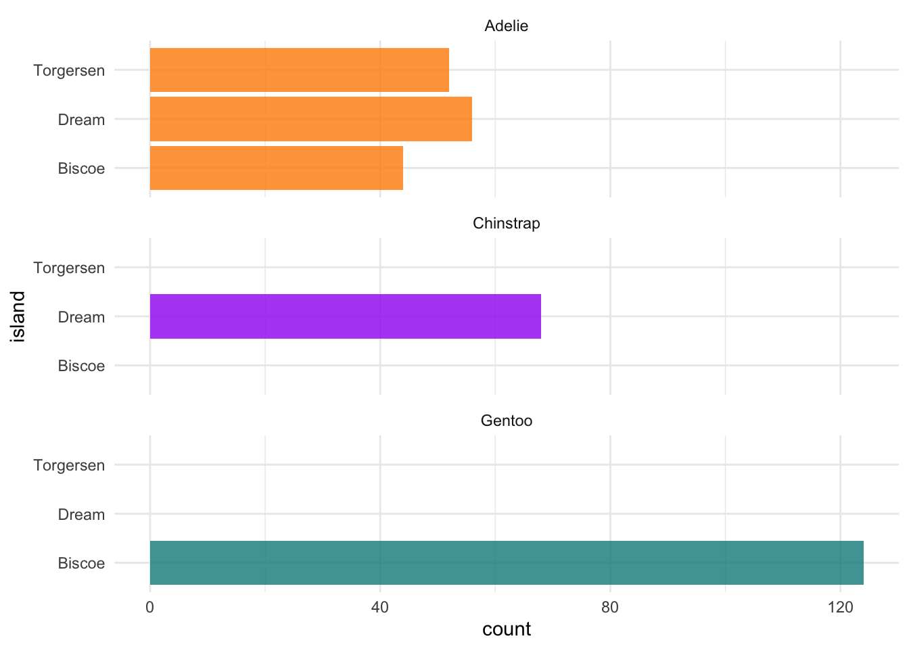
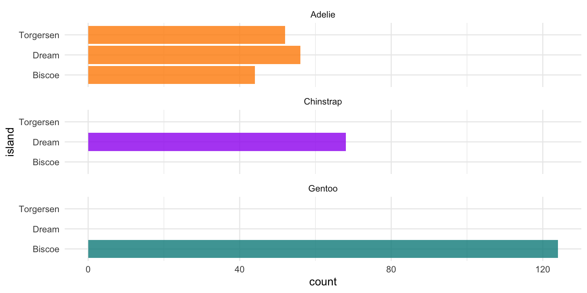

title: ""The Plight of Toronto's Homeless: Understanding the Causes and Seeking Solutions""
subtitle: "My subtitle if needed"
author:
- Will Davidson
thanks: "Code and data are available at: LINK."
date: "2023-04-05 11:21:23"
date-format: "5 April 2023"
abstract: "Toronto has been experiencing a large rise in homelessness, with people sleeping in shelters or on the streets each night. The factors contributing to this issue are multiplex and manysided, including high housing costs, inadequate social assistance programs, and mental health and addiction challenges. The COVID-19 pandemic has only added to the problem, with job losses and economic uncertainty leading to more Torontoians experiencing housing insecurity. Addressing this crisis will require a comprehensive approach that prioritizes affordable housing, social support programs, and mental health and addiction services."
format: pdf
number-sections: true
bibliography: references.bibIntroduction
Homelessness is a cause of concern in many urban cities around the world, and Toronto is no exception. The city has experienced a notable rise in homelessness in recent years, with an estimated 10,000 individuals experiencing homelessness on any given night. This issue is not just about a lack of housing, but also about a lack of access to basic necessities such as food, healthcare, and employment opportunities. Homelessness is a complex problem with no easy solutions, but it is crucial that we address it with urgency and compassion. In this context, understanding the factors contributing to homelessness in Toronto and exploring potential solutions is crucial for the well-being of the city’s most vulnerable populations.
Data
Our data is of penguins (Figure 1).
Talk more about it.
Also bills and their average (Figure 2). (You can change the height and width, but don’t worry about doing that until you have finished every other aspect of the paper - Quarto will try to make it look nice and the defaults usually work.)

Talk way more about it.
Model
\[ Pr(\theta | y) = \frac{Pr(y | \theta) Pr(\theta)}{Pr(y)} \tag{1}\]
Equation 1 seems useful, eh?
Here’s a dumb example of how to use some references: In paper we run our analysis in R [@citeR]. We also use the tidyverse which was written by @thereferencecanbewhatever If we were interested in baseball data then @citeLahman could be useful.
We can use maths by including latex between dollar signs, for instance \(\theta\).
Results
Discussion
First discussion point
If my paper were 10 pages, then should be be at least 2.5 pages. The discussion is a chance to show off what you know and what you learnt from all this.
Second discussion point
Third discussion point
Weaknesses and next steps
Weaknesses and next steps should also be included.